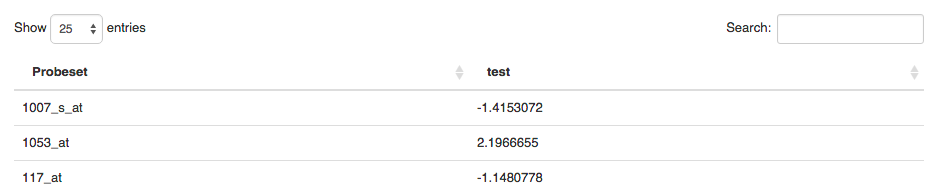

The purpose of this guide is to help you use the hemaClass webpage and the hemaClass R-package. The guide is divided into two parts. The first part focuses on the hemaClass.org webpage, and the second part is about the hemaClass package.
We want to stress that we disclaim against responsibility for the effects of the classifications. For instance we neither accept liability for the classifications performed, nor for the consequences of any actions taken on the basis of the information provided.
hemaClass provides access to GEP based classification schemes of diffuse large B-cell lymphoma (DLBCL). The classification schemes are currently available for gene expressions profiled by the Affymetrix GeneChip Human Genome U133 Plus 2.0 Array.
The classification schemes available are:
In addition we also provide REGS for Rituximab (R), Dexamethasone (P) and Melphalan (M). But the predictions of these schemes have not been properly documented yet, and we take no responsibility for the predictions.
The purpose of the webpage hemaClass.org is to provide online and userfriendly access to the DLBCL classification schemes we have developed.
Navigation on the hemaClass webpage is done using the tab panel on the top of the page.
Three options are available to you Home, Load data and
Results. Choosing Home simply takes you to the start page, where
there is access to some miscellaneous information. The information is
accessible through the navigation panel on the left.

As an example, if you want to have a look at the publications regarding
hemaClass go to Home and choose Publications in the information
panel. We will go into more detail with the options Load data and
Results in the following two sections.
To use the classifcation schemes available on hemaClass.org, we need
to load some data. To do this select Load data in the tab panel on
the top of the page.
As you do this, the following second tab panel is made available.

To use your own data choose CEL files, or if you want to use the
test data provided by us choose Build-in data.
In case you want to classify your own data choose CEL files in the
tab panel. Here you have the possibility of uploading your data using
the panel on the left hand side of the page.
Note: An issue with the shiny plugin we use for uploading files makes it impossible to upload more than one file on some older browsers, including Internet Explorer 9 and older.
After you have uploaded the samples you want to classify they need to be normalized. hemaClass provides different methods for normalization of your samples, and you have to choose which method you want to use.
The methods for normalization is:
Use build in reference: This method normalizes your samples according to a build in reference dataset. There is currently 6 build in reference datasets available.
Build a reference: With this method you build a reference of atleast
?? .CEL files that you upload. When the samples you want to use as a
reference has been uploaded press Build the reference.
Upload a reference: With this method you normalize your samples to a reference that you upload. The reference that you upload has to be of the filetype .rds.
Cohort based RMA: The final method is Cohort based normalization, where all the samples you provide are used for normalization. This method is best for when you have a large collection of samples.
Choose the normalization method which is most suitable for the samples you have and that you want to classify. When you have choosen a normalization method follow the onscreen instructions to normalize your samples.
When you have finished the preprocessing of your samples you will be able to see the data on the page.

In Metadata you can provide metadata for your dataset by either entering
the metadata manually or uploading a file with metadata.
Currently hemaClass supports the following filetypes for uploading metadata: .txt, .rds, .RData and .xls.
If you type in the metadata manually you are also able to download it afterwards as .xls file.

Using the metadata you are able to calculate the IPI score of the patient.
If you want to use the build-in data provided by us to test the system
go to Build-in-data. We have provided two datasets which you can
choose from in the panel on the left hand side of the page.

The two datasets provided by us consists of… . Also, metadata is available for both datasets.
In the final tab of the Load data page you are able to see the
metadata that is either available or that you have provided.

To see the results of the classification of the data you have choosen
go to the Results tab on the main tab panel. In the Estimated
probabilities tab you can see the results of the classifications, and
in the Patient summaries tab plots of survival curves and IPI scores
are available.


The purpose of the hemaClass R-package is to make our classification schemes and the source code available to anyone interested. With the hemaClass R-package you can also run a local version of the hemaClass webpage.
To install the latest version of hemaClass directly from GitHub, in R run:
# Install necessary packages
# First from bioconductor
source("http://bioconductor.org/biocLite.R")
biocLite(c("affy", "affyio", "preprocessCore"))
# Then from CRAN
install.packages(c("shiny", "matrixStats", "Rcpp", "RcppArmadillo",
"RcppEigen", "testthat", "WriteXLS"))
# From GitHub
install.packages("devtools")
devtools::install_github("AnalytixWare/ShinySky")
# Finally the package is installed.
devtools::install_github("oncoclass/hemaClass", dependencies = TRUE)
hemaClass is still under development and should be considered unstable. Be sure that you have the package development prerequisites if you wish to install the package from the source.
Note: The interface and function names may still see significant changes and modifications!
If you encounter any issues or bugs using either the hemaClass webpage or the hemaClass R-package, or if you have suggestions for improvements please report it to us at GitHub. You are also welcome to send us questions or comments on mail.